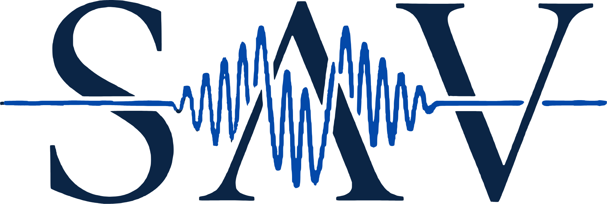

Diagnóstico estratégico · SAV Medical
Medicina que se ve,
se entiende y se recomienda.
Queremos entender a fondo cómo trabajas —consulta, cirugía, ultrasonido móvil y alianzas con clínicas— para construir tu estrategia de marca, contenido y publicidad.
Tiempo estimado: 12–15 minutos. Casi todo es de tocar opciones; escribe solo donde quieras dar detalle. Si algo no lo sabes aún, déjalo en blanco y lo platicamos.